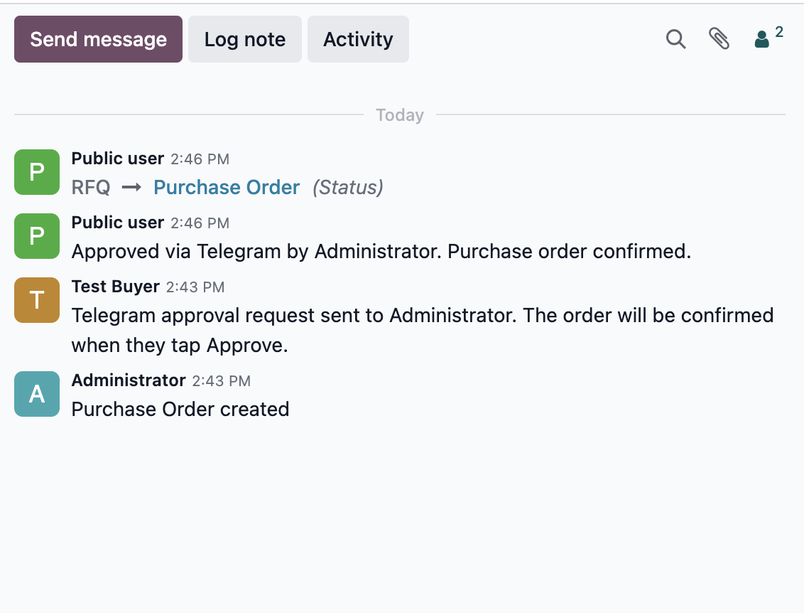

GATE Threshold-gated, by design
POs at or above the threshold are gated through Telegram; smaller POs confirm normally with no approver friction. Self-approve is blocked: when requester == approver the order confirms without a Telegram detour, and the chatter explains why -- no silent skips, no surprised users.


AUDIT Every tap on the PO chatter
When the request goes out: chatter says "Telegram approval request sent to Anna". When the tap comes back: chatter says "Approved via Telegram by Anna at 14:32". When 24h passes without a tap: the request auto-expires (30-min cron) and the chatter notes it. Your finance auditor can reconstruct any approval from the PO record alone.
SAFE Hard to misuse
- Re-confirming a PO that already has an open Telegram request raises a clear error rather than spawning a duplicate message.
- Each inline button carries an HMAC-signed callback. An attacker who learns a request id alone cannot forge a tap without the per-instance webhook secret.
- The bot token never leaves your database. Telegram talks directly to your Odoo URL, no Rteam-hosted relay.
- Approver reopens the PO in Odoo? The header shows a "View Telegram approval" button so they can see exactly which TG message is in flight.